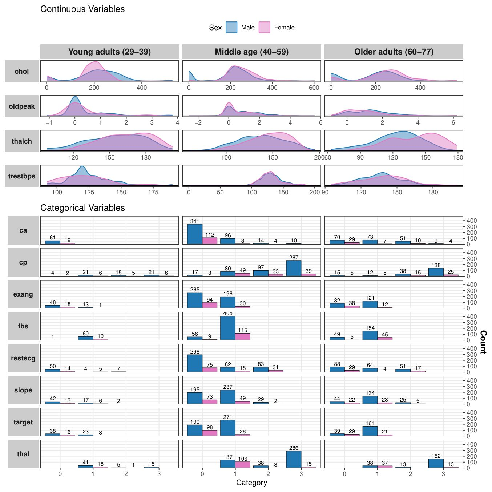
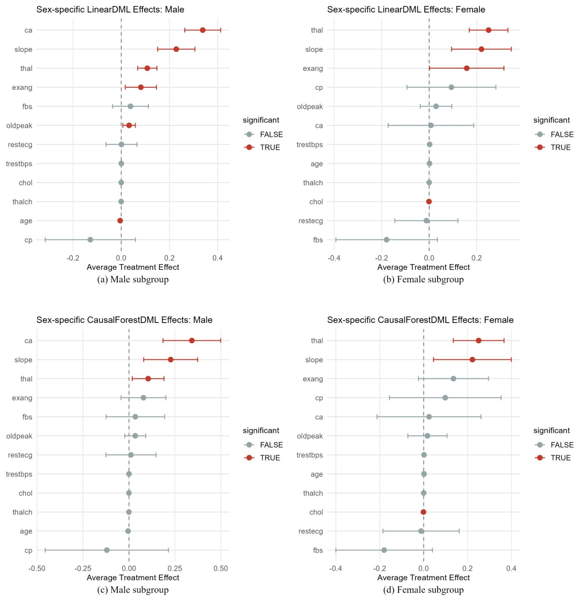

Как алгоритмы учатся безошибочно предсказывать болезни сердца

Традиционные шкалы риска сердечно-сосудистых заболеваний часто дают сбои у пациентов из разных демографических групп и не учитывают неопределенность прогнозов. Исследователи разработали комплексный подход на основе искусственного интеллекта, который объединяет оценку неопределенности и причинный анализ факторов риска. Новая система точнее определяет вероятность развития патологий и выявляет различия в течении болезни у мужчин и женщин. Это приближает создание клинически надежных инструментов поддержки принятия решений в кардиологии.
Главное
- Модель случайного леса показала ROC-AUC выше 0.90 при прогнозировании рисков.
- Гибридная импутация данных улучшила показатель ROC-AUC с 0.90 до 0.92.
- Выявлены гендерные различия в ключевых причинных факторах сердечных патологий.
Подробнее
Сердечно-сосудистые заболевания остаются главной причиной смертности в мире, унося жизни миллионов людей ежегодно. Существующие клинические шкалы вроде ASCVD или SCORE2 опираются на ограниченный набор линейных параметров и часто теряют точность при работе с разнообразными группами пациентов. Чтобы преодолеть эти ограничения, авторы работы предложили интерпретируемую систему машинного обучения, способную оценивать не только вероятность болезни, но и степень уверенности самой модели в своем прогнозе.
Для работы исследователи использовали ретроспективный набор данных UCI Heart Disease, включающий 918 участников, среди которых было 725 мужчин и 193 женщины. Проблема пропущенных данных решалась с помощью гибридной стратегии импутации, сочетающей множественное заполнение цепными уравнениями (MICE) и контролируемый алгоритм случайного леса. Неопределенность прогнозов оценивалась методами бутстрапа (метод повторной выборки для оценки точности статистики), предсказательной энтропии и взаимной информации. Для поиска причинно-следственных связей применялись линейный метод двойного машинного обучения и причинный лес (Causal Forest).
Результаты показали, что алгоритм случайного леса продемонстрировал наиболее стабильную предсказательную способность с площадью под ROC-кривой (ROC-AUC) выше 0.90. Применение гибридной стратегии заполнения пропусков повысило F1-меру классификации с 0.87 до 0.89 и ROC-AUC с 0.90 до 0.92. Анализ причинных связей выделил количество крупных сосудов, наклон ST-сегмента, талассемию и индуцированную нагрузкой стенокардию как главные предикторы патологий, причем для мужчин и женщин эти факторы различались.
Ограничения
Исследование выполнено на ретроспективных данных относительно небольшой выборки с дисбалансом по полу, поэтому требует внешней валидации на независимых клинических когортах.
Подробный разбор статьи
Резюме
Сердечно-сосудистые заболевания по-прежнему занимают первое место среди причин смертности во всем мире. Несмотря на то, что модели машинного обучения демонстрируют высокую точность прогнозирования, исследователи уделяют недостаточно внимания оценке степени неопределенности таких прогнозов и выявлению специфичных для пола факторов риска, что крайне важно для внедрения клинически надежного искусственного интеллекта.
Разработать и оценить интерпретируемую систему машинного обучения с учетом неопределенности для прогнозирования сердечно-сосудистых заболеваний. Данный подход объединяет анализ ассоциаций биомаркеров, объяснимый искусственный интеллект и стратифицированную по полу оценку рисков.
В этом ретроспективном обсервационном исследовании использовался набор данных UCI Heart Disease, включающий в себя 918 участников, среди которых было 725 мужчин и 193 женщины. Авторы проанализировали демографические, клинические, лабораторные и связанные с физической нагрузкой переменные. Проблема пропущенных значений была решена с помощью гибридной стратегии импутации, объединяющей метод множественной импутации цепными уравнениями (MICE) и контролируемую импутацию на основе алгоритма Random Forest.
Пояснение
Импутация данных — это статистический метод восстановления или заполнения пропущенных значений в наборах данных, позволяющий использовать всю доступную информацию без удаления неполных записей.
Исследователи разработали ансамблевую стратегию машинного обучения для борьбы с пропущенными данными. Затем они создали и оценили современные модели машинного обучения, используя стратифицированные обучающие и тестовые выборки, а также 5-кратную перекрестную валидацию. Качество прогнозов оценивалось с помощью нескольких метрик. Уровень неопределенности измерялся с помощью бутстреп-ресемплирования, предиктивной энтропии и взаимной информации. Для оценки специфичных для пола средних показателей и проведения анализа ассоциаций факторов риска применялись линейный метод двойного машинного обучения (Linear Double machine learning) и причинный лес двойного машинного обучения (Causal Forest double machine learning).
Алгоритм Random Forest продемонстрировал наиболее сильную и стабильную предсказательную способность как в мужской, так и в женской когортах: значения ROC-AUC превышали 0.90, а показатели перекрестной валидации были высокими. Применение гибридной импутации улучшило качество классификации, увеличив показатель F1-score с 0.87 до 0.89 и значение ROC-AUC с 0.90 до 0.92. Причинно-следственный анализ ассоциаций показал, что количество пораженных крупных сосудов, наклон сегмента ST, талассемия и стенокардия напряжения являются самыми сильными факторами риска развития сердечно-сосудистых заболеваний, причем между подгруппами мужчин и женщин наблюдались заметные различия.
Важно
Модель Random Forest достигла ROC-AUC выше 0.90, а гибридная импутация повысила этот показатель до 0.92, выявив ключевые половые различия в факторах риска сердечно-сосудистых заболеваний.
Интеграция прогнозного моделирования, оценки неопределенности и машинного обучения для анализа ассоциаций создает надежную и клинически интерпретируемую систему оценки риска сердечно-сосудистых заболеваний. Предложенный подход повышает достоверность прогнозов и одновременно определяет причинно значимые гендерно-специфичные факторы риска, что поддерживает развитие прецизионной кардиологии и заслуживающего доверия клинического искусственного интеллекта.
Введение
Актуальность проблемы сердечно-сосудистых заболеваний и ограничения классических шкал
Сердечно-сосудистые заболевания (ССЗ) остаются ведущей глобальной проблемой здравоохранения: по состоянию на 2022 год ими страдают более 500 миллионов человек, а число связанных с ними летальных исходов достигло примерно 20 миллионов, что составляет почти треть всех смертей в мире. В Соединенных Штатах ССЗ удерживают первое место среди причин смертности, провоцируя примерно каждый третий случай ухода из жизни ежегодно. Особое место в этой структуре занимает ишемическая болезнь сердца (ИБС), характеризующаяся сужением или обструкцией коронарных сосудов, падением миокардиального кровотока и развитием инфаркта миокарда, сердечной недостаточности или внезапной смерти. Ситуация усугубляется ростом распространенности факторов риска, обусловленных образом жизни: ожирения, артериальной гипертензии, сахарного диабета, дислипидемии и курения. Поскольку патологии развиваются скрытно, ранняя диагностика и точное прогнозирование рисков критически важны для сводимых к минимуму неблагоприятных исходов.
Важно
> Сердечно-сосудистые заболевания охватывают более 500 млн человек и вызывают около 20 млн смертей ежегодно, причем ранняя диагностика осложняется скрытым течением ИБС и неструктурированностью медицинских данных.
На уровень риска ССЗ влияют возраст и пол: с годами вероятность заболеть возрастает у представителей обоих полов из-за накопления патологических факторов и ухудшения работы сосудов. Мужчины сталкиваются с угрозой раньше и чаще, причем ишемическая болезнь сердца у них манифестирует приблизительно на 7–10 лет раньше, чем у женщин. В 2019 году стандартизированная по возрасту глобальная смертность от ССЗ среди мужчин составила 280.8 случая на 100 000 населения против 204.0 для женщин. Подобный половой диморфизм объясняется защитным действием эстрогенов у женщин репродуктивного возраста, а также различиями в сосудистой анатомии и процессах формирования бляшек. Все факторы риска делятся на неизменяемые (возраст, пол, генетика) и модифицируемые (гипертония, курение, гиподинамия), коррекция которых способна существенно снизить заболеваемость. Однако ранняя симптоматика вроде боли в груди, головокружения или одышки часто остается без внимания, что задерживает постановку диагноза.
Пояснение
> Модифицируемые факторы риска — это параметры образа жизни и здоровья, на которые можно повлиять (давление, вес, вредные привычки), в отличие от генетики и возраста.
Оценка рисков традиционно опирается на клинические тесты, данные носимых устройств и электронные медицинские карты (ЭМК), однако последние часто не структурированы, а сигналы с гаджетов содержат шумы и пропуски. Экономическое бремя ССЗ колоссально и превышает 200 миллиардов долларов в США ежегодно, включая прямые расходы и потери производительности. Для стратификации рисков на уровне популяций исторически применяются классические шкалы, такие как Framingham Risk Score, уравнения ASCVD и SCORE2. Данные инструменты оперируют ограниченным набором демографических и лабораторных параметров, предполагают линейность связей и опираются на параметрическую регрессию. Хотя их дискриминационная способность приемлема в стандартных популяциях, калибровка таких моделей ухудшается при работе с гетерогенными когортами — меньшинствами, молодежью или пациентами с сопутствующими патологиями, не учитывая сложные физиологические взаимодействия.
Машинное обучение и поиск причинно-следственных связей с помощью Double Machine Learning
Развитие вычислительной техники привело к внедрению алгоритмов машинного обучения (МО), включая случайные леса (Random Forests, RF), градиентный бустинг (Gradient Boosting Machines, GBM), машины опорных векторов (Support Vector Machines, SVM) и глубокие нейросети. Эти методы способны моделировать нелинейные зависимости и сложные взаимодействия предикторов без жестких предварительных функциональных ограничений. Во многих исследованиях показатели площади под ROC-кривой (AUC) для выявления обструктивной ИБС или тяжелых кардиоваскулярных событий с помощью МО превышали 0.85, а нейросети на базе ЭКГ успешно находили скрытые признаки снижения фракции выброса или фибрилляции предсердий, неразличимые для клиницистов. Тем не менее перенос таких моделей в рутинную практику осложнен переобучением из-за малых ретроспективных выборок, слабой внешней валидацией и непрозрачностью моделей («черный ящик»), что снижает доверие врачей.
Осторожно
> Черноящичные модели МО могут демонстрировать высокий AUC за счет переобучения на ретроспективных данных, но их отсутствие интерпретируемости и слабая внешняя валидация препятствуют внедрению в клинику.
Для преодоления барьеров интерпретируемости исследователи применяют выделение признаков на основе медицинских знаний, регуляризацию методом наименьшего абсолютного сжатия и отбора (LASSO), а также методы объяснимости вроде SHAP (SHapley Additive exPlanations), которые раскладывают предсказания на вклад отдельных факторов. При этом высокая предсказательная ценность моделей отражает лишь статистические ассоциации, но не причинно-следственные эффекты. Чтобы исходить не только из прогнозов, но и оценивать реальное влияние факторов, в работе применяется метод двойного машинного обучения (Double Machine Learning, DML). В предложенном авторами последовательном рабочем процессе данные проходят предварительную обработку (импутация пропусков через ансамблевые стратегии, кодирование категориальных признаков, стандартизация непрерывных переменных). Затем строятся множественные модели МО, разделяемые на обучающие, валидационные и тестовые подвыборки с применением 5-кратной перекрестной проверки. Качество моделей оценивается по F1-мере, метрике MCC, точности, ROC-AUC, AUPRC и показателю Brier score. Оценка неопределенности выполняется через бутстрэп-ресемплинг, а линейный DML и Causal Forest DML позволяют оценить гетерогенные эффекты ключевых факторов риска для персонализированной и интерпретируемой оценки рисков ССЗ.
Обзор литературы
Поскольку сердечно-сосудистые заболевания (ССЗ) остаются ведущей причиной смертности во всем мире, исследователи разрабатывают инструменты для их профилактики, диагностики и ведения. Али и др. предложили систему интеллектуального мониторинга для прогнозирования болезней сердца на основе ансамблевого глубокого обучения и слияния признаков. Их платформа объединяет физиологические данные с носимых датчиков и электронных медицинских карт (ЭМК). Для отбора признаков использовался прирост информации, а веса классов определялись через условную вероятность. Финальный прогноз выполнялся ансамблевой моделью с мета-обучением LogitBoost, которая достигла точности около 98.5%, превзойдя классические методы машинного обучения (МО).
Пояснение
> Ансамблевое обучение — это метод объединения нескольких алгоритмов для получения более точного и стабильного прогноза, чем дает каждая модель по отдельности.
Кориал и др. разработали ансамблевую систему раннего обнаружения ССЗ, объединив метод хи-квадрат для отбора признаков с классификатором мажоритарного голосования. На основе 303 записей пациентов и 13 клинических признаков из датасета Cleveland метод хи-квадрат выделил пять наиболее информативных признаков, сократив вычислительную нагрузку более чем на 50%. Ансамбль голосования объединил логистическую регрессию (LR), случайный лес (RF), наивный байесовский классификатор Гаусса (GNB) и метод k-ближайших соседей (KNN), достигнув точности 92.11% (прирост на 2.95% по сравнению с лучшим одиночным классификатором). Ван и др. провели ретроспективное исследование моделей риска преждевременной ишемической болезни сердца (ИБС) на 797 пациентах (обучающая и валидационная выборки в соотношении 7:3). Модели LASSO и RF выделили гиперурикемию, хроническую болезнь почек и атеросклероз сонных артерий как ключевые предиктороы. Модель RF превзошла LASSO по всем метрикам, показав AUC 0.91 против 0.84 при статистически значимом различии (Z = 3.99, P < 0.05). На основе SHAP-значимости ведущими факторами стали атеросклероз сонных артерий, возраст, хроническая болезнь почек, гиперурикемия и пол.
Дорраки и др. изучили роль психологических факторов в улучшении прогнозирования ССЗ с помощью ансамбля МО на данных UK Biobank. При использовании только традиционных факторов риска модель достигала точности 71.31%, однако включение переменных психического здоровья повысило точность до 85.13%. Олаваде и др. предложили фреймворк для прогнозирования ИБС, интегрирующий алгоритм оптимизации поиска орла (BESO) для отбора признаков. Модель RF показала наилучшую производительность, достигнув точности 90% и 92% на двух датасетах против 71–73% у традиционных клинических шкаф риска. Ключевыми предикторами оказались частота сердечных сокращений, возраст, ИМТ, систолическое артериальное давление, типичная боль в груди, элевация ST и нарушения локальной сократимости миокарда.
Осторожно
> Большинство рассмотренных моделей обучены на конкретных ретроспективных датасетах, что может ограничивать их применимость в реальной клинической практике из-за особенностей выборки.
Данка и др. создали гибридный фреймворк на базе XGBoost для прогнозирования болезней сердца, применив статистическое обнаружение выбросов (Z-оценка и межквартильный размах — IQR) и оптимизацию гиперпараметров с помощью Optuna. На датасете Cleveland модель продемонстрировала точность около 95.45%, чувствительность 92.86%, точность (precision) 100%, специфичность 100% и F1-меру 96.3%. Али и др. сравнили алгоритмы KNN, DT, RF и MLP на данных Kaggle, где RF показал идеальную точность, чувствительность и специфичность в 100%. Рабби и др. предложили алгоритмы VEMLA и BEMLA, используя методы уменьшения размерности (PCA, LDA). VEMLA достигла точности 92% на датасете Cleveland, а BEMLA — 97% на датасетах Framingham и Indicators of Heart Disease (2020).
Талукдер и др. исследовали гибридный фреймворк объяснимого искусственного интеллекта (HXAI-ML), интегрирующий методы балансировки данных (RO, SMOTE, TL, IHT) и инструменты интерпретируемости (SHAP, LIME, PIA). Модель HXAI-ML достигла точности 98.78% и точности (precision) 98.82%. Для оценки причинно-следственных связей Черножуков и др. разработали фреймворк Double/Debiased ML (DML), использующий ортогональность Неймана для устранения смещения регуляризации. Это позволяет применять гибкие алгоритмы (Lasso, RF, нейросети) при работе с многомерными мешающими факторами, сохраняя асимптотическую нормальность.
Важно
> Существующие исследования сосредоточены на точности классификации и отборе признаков, однако в них почти не уделяется внимания гендерным различиям, оценке неопределенности, причинно-следственным предикторам и гетерогенным эффектам лечения.
Из обзора литературы следует, что большинство работ нацелено на повышение точности прогнозирования ССЗ через гибридные архитектуры МО и инженерные подходы к признакам. Несмотря на высокие показатели эффективности, недостаточно изучены специфические для пола факторы риска, количественная оценка неопределенности, каузальные предикторы и индивидуальные эффекты терапии. Редко проводятся бутстрэп-анализ стабильности прогнозов, оценка калибровки и учет гетерогенных эффектов в клинических подгруппах. Поэтому сохраняется потребность в интеграции процедур предобработки, балансировки классов, оценки неопределенности и каузального DML для создания надежных и клинически транслируемых моделей предсказания ССЗ.
...
Обработка пропущенных данных
Из-за сложности набора данных по сердечно-сосудистым заболеваниям (ССЗ) стандартные методы импутации оказались недостаточно эффективными и могли привести к статистически незначимым результатам. Авторы применили гибридную стратегию, адаптированную под тип переменных. Для непрерывных показателей (возраст, артериальное давление в покое, уровень холестерина, максимальная частота сердечных сокращений, депрессия сегмента ST) использовали метод множественной импутации с помощью цепочечных уравнений (MICE), где каждая переменная моделируется с учетом всех остальных. Для категориальных и мультиномиальных признаков (пол, уровень сахара в крови, стенокардия при нагрузке, тип боли в груди, данные ЭКГ, количество сосудов, талассемия) применяли контролируемую импутацию: для каждого признака обучали модель случайного леса (RF) на наблюдениях без пропусков, используя все доступные предикторы. Пропущенные значения заполнялись предсказанными классами, что позволяет сохранить дискретную структуру данных и учесть многомерные взаимосвязи.
Важно
Гибридный подход (MICE для непрерывных и RF для категориальных данных) позволил сохранить структуру и согласованность клинических показателей.
Пояснение
MICE — это итеративный метод, который заполняет пропуски, последовательно моделируя каждую переменную на основе других, что точнее простого усреднения.
Масштабирование признаков
Все непрерывные предикторы были стандартизированы через Z-оценку: x^* = \fracx - µ\sigma, где µ и σ — среднее значение и стандартное отклонение выборки для каждого признака. Это необходимо для обеспечения численной стабильности и сопоставимости, особенно для регуляризованных моделей, таких как LASSO и Elastic Net, где масштаб признаков напрямую влияет на коэффициенты, хотя для деревьев решений (RF, GBM) это менее критично.
Разделение на обучающую и тестовую выборки
Данные были разделены в соотношении 80:20 с использованием случайного зерна 42. Применялась стратифицированная выборка, чтобы сохранить пропорции положительных и отрицательных случаев: P(Ytrain = 1) ≈ P(Ytest = 1). Все этапы предобработки (импутация, масштабирование, кодирование) были объединены в единый конвейер (pipeline), параметры которого рассчитывались исключительно на обучающей выборке и затем применялись к тестовой, что предотвращает утечку данных. Для категориальных переменных, таких как тип боли в груди и талассемия, использовали one-hot кодирование.
Осторожно
Использование единого конвейера предобработки критически важно для предотвращения «утечки данных», когда информация из тестовой выборки случайно попадает в процесс обучения модели.
Моделирование и классификация
Вектор признаков x_i включает демографические, физиологические и функциональные показатели, такие как возраст, уровень холестерина, артериальное давление и стенокардия при физической нагрузке, которые являются стандартными в клинической оценке рисков. Цель состоит в обучении функции отображения F: R^p → [0, 1], оценивающей условную вероятность P(y_i = 1 / x_i) для классификации пациентов по группам низкого и высокого риска. В зависимости от архитектуры, F(·) может быть линейным предиктором, нелинейным преобразованием или ансамблем правил принятия решений. Мы использовали широкий спектр моделей машинного обучения (ML) — от параметрических до непараметрических — для учета сложности связей между клиническими предикторами и исходами сердечно-сосудистых заболеваний (ССЗ).
Линейная регрессия (LR) применялась как базовая вероятностная модель из-за её интерпретируемости и возможности оценки отношений шансов. Метод опорных векторов (SVM) использовался для моделирования нелинейных границ принятия решений через ядерные преобразования. Деревья решений (DT) были включены благодаря прозрачной иерархической структуре, а случайные леса (RF) — для повышения стабильности прогнозов и снижения дисперсии. Гауссовский наивный байесовский классификатор (GNB) служил эффективным базовым решением при допущении условной независимости, а метод k-ближайших соседей (KNN) позволил классифицировать пациентов на основе сходства их клинических профилей. Многослойные перцептроны (MLP) применялись для захвата нелинейных взаимодействий высшего порядка, а градиентный бустинг (GBM) — для последовательного улучшения точности путем минимизации ошибок предыдущих слабых моделей.
Важно
Исследование охватывает спектр моделей от интерпретируемых линейных до сложных нелинейных ансамблей и нейронных сетей для оценки риска ССЗ. [!tip] Ансамблевые методы (RF, GBM) объединяют предсказания нескольких слабых алгоритмов для получения более точного и устойчивого результата, чем у одной модели.
Оптимизация гиперпараметров
Для повышения обобщающей способности моделей проводилась настройка гиперпараметров с использованием кросс-валидации на обучающей выборке. Для LR оптимизировались параметры регуляризации и штрафные функции. В SVM настраивались параметры ядра и регуляризации границ. В методах на основе деревьев (DT, RF, GBM) подбирались глубина дерева, количество оценщиков и критерии разбиения узлов. Для KNN оценивались количество соседей и метрики расстояния, а для MLP — архитектура скрытых слоев, функции активации и параметры оптимизации. Основным критерием выбора была площадь под ROC-кривой (ROC-AUC).
Стратегия отбора переменных с штрафами
Для выявления наиболее информативных предикторов ишемической болезни сердца мы использовали четыре архитектуры: LASSO, Elastic Net, GBM и RF. LASSO и Elastic Net применялись для борьбы с мультиколлинеарностью и автоматического отбора признаков. Методы GBM и RF использовались для захвата сложных нелинейных зависимостей без априорных допущений. Учитывая гендерные различия в патофизиологии ССЗ, вся когорта была стратифицирована по биологическому полу, и модели обучались, настраивались и валидировались независимо для мужчин и женщин. Аналитический конвейер был реализован на Python 3.4 с использованием библиотеки scikit-learn 1.8.
Осторожно
Использование стратификации по полу критически важно, так как механизмы развития ССЗ могут существенно различаться у мужчин и женщин, что влияет на значимость предикторов.
Логистическая регрессия LASSO
Метод LASSO был выбран для отбора переменных, так как его L₁-штраф обнуляет коэффициенты наименее информативных предикторов, исключая их из модели. Степень штрафа определялась через пятикратную кросс-валидацию по критерию максимизации ROC-AUC. Модель обучалась с использованием алгоритма SAGA (максимум 5000 итераций). Непрерывные предикторы были стандартизированы, а категориальные — закодированы (dummy-coding). Важность переменных определялась по абсолютной величине финальных коэффициентов; для многоуровневых признаков значения суммировались, а итоговые показатели нормализовались до 100% для сравнения между моделями.
Логистическая регрессия ElasticNet
Для борьбы с потенциальной мультиколлинеарностью среди предикторов в задаче прогнозирования сердечно-сосудистых заболеваний был задействован метод Elastic Net, выполняющий регуляризованный отбор переменных. В отличие от LASSO, Elastic Net объединяет штрафы L₁ и L₂, что повышает стабильность модели при наличии коррелирующих предикторов и одновременно сохраняет способность обнулять коэффициенты незначимых переменных. Параметр смешивания был зафиксирован на уровне 0.5, задавая равный вес обоим типам штрафов, а общая сила регуляризации оптимизировалась с помощью пятикратной кросс-валидации с максимизацией площади под ROC-кривой. Модель обучалась с использованием алгоритма оптимизации SAGA с максимальным числом итераций 5000. Важность переменных определялась по тому же алгоритму, что и для модели LASSO.
Пояснение
Elastic Net — это гибридный метод регрессии, сочетающий методы LASSO и Ridge, который отбирает важные признаки и борется с их сильной взаимосвязью.
Важность признаков GBM
Помимо параметрических методов регуляризации, для оценки важности переменных использовался метод градиентного бустинга деревьев (GBM) на основе ансамблевого подхода. GBM последовательно объединяет неглубокие деревья решений, где каждое новое дерево подгоняется под остаточные ошибки текущего ансамбля, минимизируя функцию потерь методом градиентного спуска в пространстве функций. Модель была реализована с использованием регрессора GBM в scikit-learn с фиксированным случайным сидом (random_state = 42) для обеспечения воспроизводимости, при этом применялось 100 этапов бустинга, скорость обучения 0.1, максимальная глубина дерева 3 и доля подвыборки 1.0. Использовался тот же конвейер предобработки, что и для LASSO. Важность переменных измерялась как кумулятивное снижение примеси в узлах, приходящееся на каждый предикатор во всех деревьях; для многоуровневых категориальных переменных значения важности суммировались по всем их индикаторным термам с последующей нормализацией.
Отбор признаков RF
В дополнение к ансамблевому подходу GBM, для независимой оценки важности переменных применялся регрессор на основе случайного леса (RF). В отличие от GBM, RF строит множество деревьев решений параллельно, каждое из которых обучается на бутстрэп-выборке тренировочных данных, причем для уменьшения корреляции между деревьями и улучшения генерализации на каждом расщеплении рассматривается случайная подвыборка предикторов. Модель была реализована в scikit-learn с использованием 500 деревьев решений (n_estimators = 500) и фиксированным случайным сидом (random_state = 42); остальные гиперпараметры остались значениями по умолчанию. Применялась та же предобработка данных, что и для LASSO. Важность переменных определялась как среднее уменьшение индекса примеси Джини для каждого предикатора по всем деревьям, с агрегацией и нормализацией многоуровневых категориальных признаков.
Важно
Для отбора признаков и оценки их важности применялись три модели (Elastic Net, GBM с 5000 итерациями / 100 этапами бустинга и RF с 500 деревьями), что обеспечило устойчивость анализа к мультиколлинеарности.
Метрики оценки
Производительность моделей оценивалась с помощью стандартных классификационных метрик:
Точность
Точность (Accuracy) = \frac{TP + TN}{TP + TN + FP + FN}
F1-мера
F1-мера (F1) = \frac{2 \cdot ext{Точность} \cdot ext{Полнота}}{ ext{Точность} + ext{Полнота}}
Коэффициент корреляции Мэтьюса (MCC)
Коэффициент корреляции Мэтьюса (MCC) = \frac{TP \cdot TN - FP \cdot FN}{\sqrt{(TP + FP)(TP + FN)(TN + FP)(TN + FN)}}
Площадь под ROC-кривой (ROC-AUC)
ROC-AUC измеряет способность модели разделять классы по всем порогам принятия решений: AUC = \int_{1}^{0} ext{TPR}( ext{FPR}^{-1}(t)) \, dt
Оценка Бриера
Оценка Брайера оценивает точность вероятностных прогнозов: Оценка Брайера (Brier Score) = \frac{1}{n} \sum_{i=1}^{n} (y_i - \hat{p}_i)^2
В контексте прогнозирования сердечно-сосудистых заболеваний чувствительность критически важна для выявления пациентов высокого риска, в то время как ROC-AUC отражает общую дискриминационную способность. F1-мера балансирует точность и полноту, особенно на несбалансированных выборках. MCC обеспечивает надежную оценку качества классификации даже при дисбалансе классов, а оценка Брайера проверяет калибровку вероятностей, показывая, насколько предсказанные вероятности соответствуют наблюдаемым исходам.
Оценка неопределенности для анализа производительности
Поскольку в данном исследовании yi \in \0, 1\ указывает на отсутствие или наличие сердечно-сосудистых заболеваний, эффективность лучшей модели машинного обучения оценивалась с помощью accuracy, F1-score, MCC, ROC-AUC, AUPRC и Brier score. Для количественной оценки неопределенности оценок эффективности на тестовом наборе выполнялся бутстрэп-ресемплинг. Для каждого бутстрэп-репликата m = 1, \dots, M метрики пересчитывались: \\hat heta(m)\m=1M, где \hat heta(m) обозначает оценку метрики из m-й бутстрэп-выборки. Эмпирические 95%-ные доверительные интервалы получались из 2.5-го и 97.5-го перцентилей бутстрэп-распределения. Прогностическая неопределенность дополнительно характеризовалась дисперсией оценок вероятностей для каждого дерева:
\hat{\sigma}^2(x_i) = \frac{1}{B} \sum_{b=1}^{B} (p_b(x_i) - \bar{p}(x_i))^2
где B — общее число деревьев, p_b(x_i) — предсказанная вероятность для наблюдения x_i из b-го дерева, а \barp(xi) = \frac1B \sumb=1B pb(xi) — средняя предсказанная вероятность по всем деревьям. Прогностическая энтропия вычислялась как H(xi) = -\barp(xi) \log \barp(xi) - (1 - \barp(xi)) \log (1 - \barp(xi)), а эпистемическая неопределенность оценивалась с помощью взаимной информации. Данный подход позволяет одновременно оценивать прогностическую дискриминацию, калибровку и неопределенность.
Осторожно
Оценка неопределенности через бутстрэп и дисперсию деревьев помогает выявить неуверенность модели в прогнозах, но зависит от качества и репрезентативности тестовой выборки.
Методы причинно-следственного анализа для оценки эффектов биомаркеров: Linear DML
Причинно-следственный эффект каждого клинического признака на вероятность сердечно-сосудистых заболеваний оценивался с помощью Linear DML — частично линейной регрессионной структуры, которая выделяет средний эффект воздействия (ATE) каждого признака после гибкой корректировки на наблюдаемые конфаундеры с помощью вспомогательных моделей случайного леса (RF nuisance models). Каждый признак по очереди рассматривался как переменная воздействия, а остальные признаки — как ковариаты. И результат, и воздействие очищались от влияния ковариаат методом пятикратного кросс-фиттинга, а ATE восстанавливался путем регрессии остатков результата на остатки воздействия, что давало асимптотически верные доверительные интервалы и p-значения. Модели оценивались раздельно для подгруппы мужчин (n = 725) и подгруппы женщин (n = 193).
Причинно-следственный лес с двойным машинным обучением (CausalForestDML)
Для оценки эффектов лечения с учетом их неоднородности авторы применили метод CausalForestDML — непараметрическое расширение стандартной схемы двойного машинного обучения (DML). В этом подходе традиционная линейная модель заменяется причинным лесом (causal forest), что дает возможность эффектам варьировать гибко по всему пространству ковариат. Каждая отдельная клиническая характеристика по очереди рассматривалась как переменная воздействия, а все остальные признаки выступали в роли ковариат. Чтобы очистить исходные данные и воздействия от лишнего шума, задействовали nuisance-модели на основе случайного леса (Random Forest) и пятикратную перекрестную проверку (five-fold cross-fitting). После этого причинный лес рассчитывал индивидуальные условные средние эффекты воздействия для каждого участника (CATE).
Пояснение
CausalForestDML — это продвинутый метод машинного обучения, который объединяет случайные леса и причинный вывод, позволяя находить скрытые, нелинейные эффекты факторов риска без жестких предположений о форме связи.
Итоговые средние эффекты воздействия (ATE) получались путем усреднения показателей CATE внутри выделенных подгрупп по полу. Такой подход позволяет фиксировать сложные нелинейные и специфичные для конкретных групп причинно-следственные закономерности, которые обычная линейная модель неизбежно упустила бы, хотя платой за это становится некоторое расширение доверительных интервалов. Модели рассчитывались раздельно для мужской подгруппы, насчитывавшей n = 725 человек, и женской подгруппы с n = 193 участниками.
Осторожно
Анализ проводился на раздельных и неравных по численности группах мужчин (n = 725) и женщин (n = 193), а надежность выводов напрямую зависит от выполнения строгих допущений об отсутствии неучтенных смещений и соблюдении перекрытия.
При условии отсутствия неучтенных смещающих факторов, выполнения требований перекрытия распределений и частичной линейности, полученные оценки ATE отражают средний вклад каждого признака в причинно-значимую связь с риском развития сердечных заболеваний. Все расчеты ATE выполнялись с использованием алгоритмов LinearDML и CausalForestDML, реализованных в популярном программном пакете EconML на языке Python.
Результаты
Характеристика Мужчины OR (95% ДИ) Женщины OR (95% ДИ)
Анализ с поправкой на пол и другие параметры показал различия в силе связи между клиническими признаками и риском сердечно-сосудистых заболеваний (ССЗ) у мужчин и женщин (Таблица 2). Например, количество окрашенных сосудов при ангиографии (ca) показало высокие шансы у обоих полов: OR = 7.42 (95% CI: 4.94–11.7) для мужчин и OR = 2.56 (95% CI: 1.64–4.17) для женщин. Большую роль у обоих полов играют боли в груди (cp: OR = 3.01 [2.48–3.69] у мужчин и OR = 4.44 [2.71–7.83] у женщин), а также депрессия сегмента ST (oldpeak и slope). Напротив, уровень холестерина (chol) не продемонстрировал выраженного линейного влияния в данном срезе (OR = 1.00 для обоих полов).
Возрастная группа
Стратифицированный по возрасту логистический регрессионный анализ выявил более сильную связь между возрастом и сердечными заболеваниями у мужчин по сравнению с женщинами. За референтную группу были приняты взрослые в возрасте 29–39 лет. У мужчин в возрасте 40–59 лет вероятность развития ССЗ была значительно выше (OR = 2.36, 95% CI: 1.37–4.14, p = 0.002), а в группе 60–77 лет этот риск возрастал еще сильнее (OR = 6.95, 95% CI: 3.76–13.1, p < 0.001). У женщин в возрасте 40–59 лет достоверной связи с возрастом не наблюдалось (OR = 1.41, 95% CI: 0.43–6.41, p = 0.60), тогда как в старшей группе 60–77 лет отмечено повышение шансов на грани статистической значимости (OR = 3.86, 95% CI: 1.11–18.1, p = 0.051). Авторы отмечают, что такие различия объясняются защитным действием эстрогенов у женщин репродуктивного возраста и особенностями коронарной анатомии.
Важно
> Возраст сильнее коррелирует с риском ССЗ у мужчин (OR до 6.95 в группе 60–77 лет), чем у женщин, у которых значимый рост риска наступает позже и выражен слабее.
Анализ производительности и прогнозирования модели
Для прогнозирования ССЗ были протестированы различные модели машинного обучения (Рис. 4). Ансамблевые методы, в особенности случайный лес (Random Forest, RF), показали стабильно высокие результаты с высокими значениями ROC-AUC, AUPRC и F1-score на обоих гендерных подмножествах. Логистическая регрессия (LR) также продемонстрировала конкурентоспособные результаты, подтверждая важность линейных взаимосвязей. В женской когорте RF достиг значений ROC-AUC и AUPRC около 0.90 при высокой стабильности кросс-валидации. У мужчин RF и LR также показали отличные метрики, тогда как модели наивного Байеса (GNB) и k-ближайших соседей (KNN) обладали большей вариативностью. Сопоставимость результатов на тестовых выборках и при кросс-валидации свидетельствует об отсутствии сильного переобучения.

Пояснение
> ROC-AUC и AUPRC — метрики качества классификации; первая оценивает соотношение истинных и ложноположительных срабатываний, а вторая учитывает точность и полноту, что особенно важно при несбалансированных данных.
Подгруппа мужчин
Отбор признаков в мужской подгруппе проводился с помощью четырех классификаторов (LASSO, ElasticNet, GBM и RF) (Рис. 5). Во всех четырех моделях выделились четыре главных предиктора: ca (количество пораженных сосудов), cp (тип боли в груди), slope (наклон сегмента ST) и thal (результаты теста с таллием). Так, ca занял первое место по важности в LASSO (около 30%) и ElasticNet (около 32%), cp доминировал в RF (около 17%), а slope — в GBM (около 23%). Непрерывные предикторы заняли промежуточные позиции, а бинарные (restecg, fbs) имели минимальный вес. При оценке качества четырех подходов отбора признаков (Таблица 3) все они показалиauROC от 90.4% до 91.6%. Метод на основе RF показал максимальный auROC (91.6%), а подход GBM обеспечил наивысшую чувствительность (90.2%) и точность (87.4%).

Женская подгруппа
В женской подгруппе иерархия важности переменных заметно отличалась от мужской (Рис. 5). Во всех четырех классификаторах thal оказалась самым сильным предиктором: ее важность составляла от примерно 23% в модели RF до 40% в LASSO, что существенно выше, чем ее вес у мужчин. Параметры slope и cp заняли второе и третье места в большинстве моделей (10–21%), сохранив уровень важности, сопоставимый с мужской группой. Наиболее ярким гендерным различием стала высокая значимость уровня сывороточного холестерина (chol), который вошел в четверку главных предиктеров в моделях GBM (≈16%) и RF (≈12%) для женщин, тогда как у мужчин его важность была лишь умеренной. Другой интересной особенностью стала заметная роль fbs в модели ElasticNet (≈19%), в то время как в мужской модели этот показатель стремлся к нулю, а в остальных трех женских моделях вообще отсутствовал; это указывает на то, что данная связь может быть специфичной для конкретного алгоритма или определяться малым числом случаев в ограниченной женской выборке. Напротив, ca — один из трех главных предиктеров у мужчин для LASSO и ElasticNet — у женщин даже не вошел в топ-десятку.
Полученные данные согласуются с литературой о гендерных различиях при ишемической болезни сердца (ИБС): у женщин после менопаузы повышается уровень общего холестерина и ЛПНП, а утрата кардиопротекторного действия эстрогенов увеличивает риск сердечно-сосудистых заболеваний по сравнению с мужчинами. В то же время хорошо известно, что при ангиографии у женщин чаще выявляется некальцинированная или необструктивная форма ИБС: примерно у 60–70% женщин, направленных на коронарографию с подозрением на ишемическую болезнь сердца, обнаруживается необструктивное поражение против примерно 30% у мужчин. Данная картина отражается в более низких баллах состояния сосудов и меньшей тяжести обструктивных поражений у женщин [39], что объясняет снижение прогностического веса параметра ca в женской подгруппе. В совокупности эти наблюдения показывают, что вклад клинических предикторов в риск развития сердечных заболеваний различается в зависимости от пола, а модели с учетом гендерной стратификации позволяют точнее уловить клинически значимые патофизиологические особенности.
Важно
В женской подгруппе ключевым предиктором стала thal (до 40% важности), а общая дискриминационная способность моделей оставалась высокой с auROC от 90.0% до 94.8% (наилучший результат у RF — 94.8%).
Качество работы моделей для женской подгруппы при различных подходах машинно-обучаемого отбора признаков приведено в Таблице 3. Общие показатели были сопоставимы с мужской группой или даже немного превосходили их: значения auROC варьировали от 90.0% до 94.8%. Метод отбора признаков на основе RF показал наибольший auROC (94.8%), за ним следовали ElasticNet (93.8%) и GBM (93.1%). Чувствительность (Sensitivity) находилась в диапазоне от 60.0% до 80.0%, тогда как специфичность (Specificity) оставалась стабильно высокой (89.7%–96.6%) во всех подходах, свидетельствуя о лучшем распознавании здоровых лиц по сравнению с обнаружением больных пациентов. Такие результаты могут быть обусловлены меньшим размером женской выборки и потенциальным дисбалансом классов, из-за чего интерпретацию специфичных для подгруппы показателей следует проводить с осторожностью.
Пояснение
auROC (площадь под ROC-кривой) — метрика качества классификации, показывающая способность модели отличать больных пациентов от здоровых; значение 1.0 означает идеальное разделение, а 0.5 — случайное угадывание.
Сравнение между гендерными группами
При сопоставлении двух подгрупп следует выделить несколько важных моментов. Во-первых, такие признаки, как cp, slope, thal, chol, oldpeak и trestbps, вошли в первую десятку в обеих группах, что указывает на наличие общего ядра ключевых предиктеров. Во-вторых, ca оказался уникально важным у мужчин, а restecg — у женщин, что намекает на потенциальные гендерно-специфичные биомаркеры, заслуживающие дальнейшего изучения. В-третьих, хотя общая способность к дискриминации (auROC) у женщин оказалась сходной или выше, баланс между чувствительностью и специфичностью заметно различался: мужские модели были склонны к более высокой чувствительности, а женские — к специфичности. В совокупности эти результаты подтверждают необходимость разработки гендерно-стратифицированных моделей прогнозирования сердечных заболеваний, поскольку единая усредненная модель может скрывать клинически важные различия в значимости предикторов и операционных характеристиках.
Оценка неопределенности производительности на основе бутстрэпа
На Рисе. 6 представлены результаты бутстрэп-анализа для оценки неопределенности (UQ) работы модели RF отдельно для мужской и женской когорт ССЗ. Распределения метрик F1-score, MCC, ACC, ROC-AUC, площади под precision-recall кривой (AUPRC) и коэффициента Бриера (Brier score) оценивались с помощью многократной бутстрэп-выборки тестового набора. Точечные оценки приводятся вместе с эмпирическими 95% доверительными интервалами.
В целом модель RF продемонстрировала высокую прогнозирующую способность в обеих когортах, причем для ROC-AUC и AUPRC интервалы неопределенности оказались относительно узкими, что говорит о стабильности классификации. Мужская когорта характеризовалась стабильно высокой точностью: распределения метрик концентрировались около высоких значений F1-score, MCC и ROC-AUC при относительно низких значениях коэффициента Бриера, что указывает на хорошую вероятностную калибровку.
Осторожно
Наличие более широких доверительных интервалов для метрик F1-score и MCC у женщин связано с меньшим размером выборки и повышенной гетерогенностью внутри женской подгруппы.
В женской когорте модель также показала надежное разделение (особенно по ROC-AUC и AUPRC), однако для F1-score и MCC наблюдался больший разброс значений в бутстрэп-выборках по сравнению с мужчинами. Эта повышенная вариабельность вероятнее всего отражает меньший объем данных и большую неоднородность в женской подгруппе. Несмотря на указанный разброс, доверительные интервалы остались в пределах клинически приемлемых значений, подтверждая сохранность надежности модели.
Стоит отметить, что ROC-AUC и AUPRC продемонстрировали наименьшую относительную неопределенность в обеих группах, что свидетельствует о большей стабильности ранжирования по сравнению с пороговыми метриками (F1-score и MCC), которые сильнее зависят от выбора порога отсечения и баланса классов при ресемплировании. Напротив, относительно низкие и стабильные значения меры Бриера подтверждают адекватную калибровку предсказываемых вероятностей. В совокупности эти данные подтверждают, что предложенная структура RF обеспечивает высокую и воспроизводимую предсказательную способность, позволяя при этом оценивать неопределенность результатов для гендерно-стратифицированных популяций пациентов с ССЗ.
Гендерно-специфическое ассоциативное исследование для анализа эффектов биомаркеров
Для выявления переменных с устойчивыми ассоциациями с сердечными заболеваниями с поправкой на конфаундеры в подгруппах мужчин и женщин были применены стратифицированный по полу метод Causal Forest DML и линейный подход LinearDML. Этот аналитический каркас использовался не для утверждения причинно-следственной направленности, а для оценки того, какие предикторные признаки сохраняют значимые связи после учета структуры смешивающих факторов в наблюдательных данных. Как показано на рис. 7, у мужчин признаки ca, slope, thal и exang продемонстрировали наиболее сильные скорректированные на конфаундеры ассоциации в рамках обоих оценочных алгоритмов, что указывает на прочную связь структурной обструкции коронарных артерий и ишемических нарушений с риском сердечных заболеваний независимо от их корреляционного перекрытия с другими факторами.
Гендерно-специфическое ассоциативное исследование для анализа эффектов биомаркеров (продолжение)
Среди женщин показатели thal и slope стабильно сохраняли значимость при использовании обоих методов, подтверждая, что пути, связанные с ишемией, остаются ключевыми для сердечно-сосудистого риска у женщин; кроме того, переменная exang оказалась значимой только в рамках параметрического метода LinearDML, что связано с меньшим размером женской выборки (n = 193), ограничивающим точность непараметрического подхода Causal Forest DML, из-за чего ее ассоциация была менее устойчивой по сравнению с thal и slope. При этом показатель ca у женщин не достиг уровня значимости, что потенциально отражает половые различия в сосудистой патологии или сниженную статистическую мощность из-за меньшего числа женщин в выборке (n = 193). Общепринятые факторы риска, включая возраст, уровень холестерина, артериальное давление в покое и уровень глюкозы натощак, показали незначительные скорректированные ассоциации с доверительными интервалами, охватывающими ноль, что свидетельствует о том, что их кажущаяся прогностическая значимость в стандартных моделях во многом отражает общую корреляционную структуру, а не независимую связь.
Пояснение
Causal Forest DML и LinearDML — современные методы машинного обучения, объединяющие причинный вывод и эконометрику для оценки влияния признаков с поправкой на множество скрытых и явных факторов.
Causal Forest DML демонстрировал более широкие доверительные интервалы по сравнению с LinearDML на протяжении всего анализа, что согласуется с его непараметрической гибкостью, однако оба метода сошлись на одних и тех же значимых признаках, повышая уверенность в надежности этих ассоциаций. Важно отметить, что, поскольку данный анализ основан на наблюдательных данных, нельзя полностью исключить влияние неучтенных конфаундеров, и полученные результаты следует интерпретировать как ассоциации с поправкой на смешивающие факторы, а не как установленные причинно-следственные эффекты. В совокупности эти результаты дополняют данные о важности переменных, демонстрируя, что топ-предикторы не являются случайными корреляциями, а представляют собой устойчивые связи, сохраняющиеся при строгом контроле конфаундеров, что подчеркивает ценность стратифицированной по полу оценки сердечно-сосудистого риска.
Осторожно
Работа выполнена на наблюдательных данных, поэтому выявленные связи являются скорректированными ассоциациями, а не доказанными причинно-следственными эффектами, а меньший размер женской выборки снижает статистическую мощность.
Калибровка и клиническая полезность
Кривые калибровки продемонстрировали в целом хорошее соответствие между предсказанными вероятностями и наблюдаемой частотой событий как в мужской, так и в женской когортах, указывая на то, что модель адекватно отражает истинный риск сердечно-сосудистых заболеваний. Точные оценки вероятности имеют критическое значение в клинических условиях, поскольку переоценка риска может привести к необоснованным фармакологическим вмешательствам, тогда как недооценка может повлечь упущенные возможности для ранней профилактики. Оценки индекса Brier, рассчитанные методом бутстрэпа и представленные на рис. 6, составили приблизительно 0.10 в мужской подгруппе и 0.07 в женской подгруппе, подтвердив, что модель генерирует надежные и хорошо откалиброванные оценки вероятностей без систематического завышения или занижения риска сердечно-сосудистых заболеваний.
Калибровка и клиническая полезность (продолжение)
Согласованность между оценками производительности на тестовой выборке и в ходе перекрестной валидации для большинства классификаторов, в особенности для ансамблевых методов вроде Random Forest (RF), дополнительно подтверждает общую применимость и воспроизводимость предложенного модельного подхода в популяциях, стратифицированных по полу. Более того, подход с разделением моделей по полу повышает клиническую применимость за счет учета установленных различий в сердечно-сосудистой патофизиологии между мужчинами и женщинами, гарантируя, что прогнозы риска адаптированы к каждой пациентской подгруппе, а не получены из единой объединенной модели, способной замаскировать клинически значимую гетерогенность.
Важно
Модели продемонстрировали отличную калибровку (индекс Brier около 0.10 у мужчин и 0.07 у женщин) и надежность прогнозов, что подтверждает потенциал их интеграции в скрининг сердечно-сосудистых заболеваний после внешнего валидирования.
В целом эти результаты поддерживают потенциальную интеграцию разработанного подхода в рабочие процессы скрининга и раннего выявления сердечно-сосудистых заболеваний в клинической практике, хотя перед внедрением необходима дополнительная внешняя валидация и клиническая оценка.
Пояснение
Индекс Brier (Brier score) — метрика точности прогнозов вероятности событий, где значения ближе к нулю соответствуют идеальной калибровке модели.
Обсуждение
В данном исследовании была разработана и оценена комплексная структура на основе искусственного интеллекта, объединяющая машинное обучение, оценку неопределенности, интерпретируемый ИИ и оценку важности параметров причинно-следственной связи для прогнозирования сердечно-сосудистых заболеваний (ССЗ). Когорта включала 918 участников (725 мужчин и 193 женщины). Результаты показывают, что передовые подходы машинного обучения обеспечивают отличную предсказательную способность, одновременно предоставляя интерпретируемые данные о механизмах заболеваний и индивидуальной оценке рисков. Важно отметить, что предложенная структура преодолевает ограничения предыдущих работ за счет интеграции оценки неопределенности, анализа с разделением по полу и методов машинного обучения для ассоциативных исследований, что повышает клиническую надежность и трансляционный потенциал ИИ.
Ключевым результатом работы стало существенное улучшение метрик за счет гибридной стратегии импутации данных. Такие переменные с большим количеством пропусков, как ca, thal и slope, были успешно обработаны с помощью комбинации непрерывной импутации MICE и контролируемой категориальной импутации RandomForest (RF), что позволило сохранить многомерные связи и снизить потерю информации. После импутации производительность RF улучшилась по всем метрикам: F1-score возрос с 0.87 до 0.89, ROC-AUC — с 0.90 до 0.92, MCC — с 0.70 до 0.73, а AUPRC — с 0.88 до 0.91.
Среди всех классификаторов RF продемонстрировал наилучшие общие результаты. В подгруппе мужчин RF достиг auROC 91.6% при чувствительности 90.2%, специфичности 75.5%, точности 86.5% и auPRC 94.0%. В подгруппе женщин RF показал auROC 94.8% при более низкой чувствительности (60.0%) и высокой специфичности (96.6%). Логистическая регрессия (LR) также показала высокую конкурентоспособность с auROC 90.7% у мужчин и 90.0% у женщин. Анализ важности признаков выявил как общие, так и гендерно-специфичные факторы риска. У мужчин ca, cp, slope и thal стабильно входили в число важнейших предсказателей (например, важность ca достигала ~30% в LASSO и ~32% в Elastic Net). У женщин доминирующим предиктором стал thal (до 40% в LASSO и ~23% в RF), в то время как уровень холестерина проявил большую важность, а ca потерял значительную долю предсказательного вклада. Анализ неопределенности с помощью бутстрэпа показал узкие доверительные интервалы для ROC-AUC и AUPRC, однако распределения у женщин были шире из-за меньшего размера выборки (n=193 против 725) и повышенной гетерогенности.
Важно
Гибридная импутация и RF повысили точность прогнозирования ССЗ (ROC-AUC достигла 0.92, а у женщин — 94.8%), выявив выраженные гендерные различия в предикторах.
Сильные стороны, ограничения и валидация
Одним из главных вкладов работы стала интеграция методов причинно-следственного машинного обучения (DML) для оценки рисков ССЗ. Гендерно-стратифицированный анализ DML определил ca, slope, thal и exang как сильнейшие ассоциации для мужчин, в то время как у женщин thal и slope сохранили значимость, а ca стал незначащим, что указывает на биологические различия. Интересно, что традиционные факторы риска (возраст, холестерин, артериальное давление, сахар натощак) продемонстрировали пренебрежимо малые средние эффекты лечения после поправки на конфаундеры, подчеркивая ценность причинно-следственного анализа для поиска истинных факторов риска.
Пояснение
Причинно-следственное машинное обучение (DML) — методология, отделяющая простые статистические ассоциации от истинных причинно-следственных факторов риска.
К ограничениям исследования относятся использование ретроспективных наблюдательных данных из общедоступных когорт и меньший размер женской подгруппы, что требует внешней валидации на более крупных мультицентровых выборках. Кроме того, причинный анализ зависит от допущений об измеренных конфаундерах, которые невозможно полностью верифицировать в наблюдательных данных. В будущем планируется проспективное клиническое внедрение, интеграция данных электронных медицинских карт, носимых датчиков и оценка долгосрочных траекторий сердечно-сосудистого риска.
Осторожно
Исследование основано на ретроспективных данных с меньшей выборкой женщин (n=193), а причинно-следственные выводы требуют проспективной клинической валидации.
Внедрение в общественное здравоохранение
С точки зрения общественного здравоохранения, полученные результаты открывают важные перспективы для практического применения. Во-первых, точное выявление лиц из групп высокого риска с высокой прогностической способностью позволяет проводить раннее вмешательство и адресную профилактику, что потенциально снижает сердечно-сосудистую заболеваемость и смертность. Во-вторых, определение причинных факторов, специфичных для конкретного пола, обосновывает разработку персонализированных стратегий профилактики и инициатив в области точной кардиологии.
Важно
Точное выявление групп риска и учет гендерных особенностей позволяют снизить сердечно-сосудистую заболеваемость через раннюю профилактику и персонализированный подход.
В-третьих, прогнозы с оценкой неопределенности повышают доверие клиницистов и способствуют ответственному внедрению систем искусственного интеллекта в повседневную клиническую практику. Оценки неопределенности помогают врачам вовремя заметить случаи, требующие дополнительной проверки или осторожной интерпретации. Наконец, установление причинно-следственных связей для модифицируемых факторов риска, таких как ишемические реакции, вызванные физической нагрузкой, помогает более эффективно распределять ресурсы общественного здравоохранения на скрининг, профилактику и коррекцию образа жизни. Машинное обучение способно дополнять, но не заменять традиционные методы прогнозирования сердечно-сосудистых рисков за счет интеграции множества факторов и поиска скрытых закономерностей, хотя широкое клиническое применение возможно только после проспективной валидации в реальных условиях.
Осторожно
Широкое внедрение алгоритмов машинного обучения в рутинную медицинскую практику требует обязательной предварительной проверки на реальных клинических данных.
Заключение
Сердечно-сосудистые заболевания по-прежнему остаются одной из главных глобальных угроз здоровью человечества, что обусловливает острую необходимость в точных, надежных и понятных для клиницистов прогностических моделях. В данном исследовании была разработана комплексная система на базе искусственного интеллекта, которая объединяет гибридную предварительную обработку данных, передовые алгоритмы машинного обучения, оценку неопределенности, методы объяснимого искусственного интеллекта и причинно-следственный анализ значимости признаков для прогнозирования риска сердечно-сосудистых заболеваний на основе структурированных клинических данных.
Применение гибридной стратегии восстановления пропущенных данных, включающей метод множественной импутации цепными уравнениями для непрерывных переменных и управляемую случайными лесами импутацию для категориальных показателей, позволило существенно повысить качество информации и улучшить итоговую точность прогнозов. В результате показатель F1-score возрос с 0.87 до 0.89, а площадь под ROC-кривой (ROC-AUC) увеличилась с 0.90 до 0.92.
Пояснение
Импутация (MICE и RF) — это статистические методы восстановления пропущенных значений в медицинских картах: MICE последовательно заполняет пропуски для чисел, а случайный лес (RF) восстанавливает пропущенные категории на основе взаимосвязей других признаков.
Среди всех протестированных моделей машинного обучения алгоритм случайного леса продемонстрировал наиболее стабильные и высокие результаты как в мужской, так и в женской когортах пациентов. Он обеспечил значения ROC-AUC выше 0.90, высокие показатели точности по шкале AUPRC, F1-score, коэффициента корреляции Мэтьюса (MCC) и хорошую калибровку вероятностей, сохранив при этом устойчивость к переобучению при перекрестной проверке. Оценка неопределенности на основе бутстрэпа подтвердила высокую воспроизводимость и надежность прогнозов предложенной системы в клинической практике.
Важно
Разработанный гибридный подход на базе машинного обучения повысил ROC-AUC до 0.92 и F1-score до 0.89, а случайный лес показал максимальную стабильность прогнозов для обоих полов.
Важнейшим вкладом данной работы стало внедрение причинного машинного обучения в оценку рисков сердечно-сосудистой патологии. Модели LinearDML и CausalForestDML позволили отделить истинные причинные факторы от простых статистических корреляций. Они стабильно выделили количество пораженных крупных сосудов, наклон сегмента ST, статус талассемии и стенокардию напряжения как ключевые детерминанты риска развития сердечных заболеваний.
Пояснение
Причинное машинное обучение (Causal ML, в частности LinearDML и CausalForestDML) — это подход, который помогает понять не просто связь между факторами и болезнью, а выявить истинные причины, на которые можно повлиять терапевтически.
Выявленные существенные различия между мужчинами и женщинами подчеркивают необходимость перехода к персонализированной оценке сердечно-сосудистых рисков вместо применения универсальных моделей для всей популяции. В перспективе планируется протестировать созданный комплекс на расширенных многоцентровых выборках, данных продольных электронных медицинских карт и в ходе проспективных клинических испытаний для развития точной и заслуживающей доверия медицинской аналитики.



Полное описание рисунка
Рисунок 3: Структура пропущенных данных и сравнение эффективности прогнозирования до и после контролируемой импутации в наборе данных о сердечных заболеваниях. На верхнем левом панели показана матрица пропусков, которая демонстрирует значительное количество пропущенных данных в нескольких переменных. На верхнем правом панели представлен процент пропущенных значений для переменных с наибольшей долей пропусков. На нижнем панели сравнивается эффективность классификации с помощью случайного леса до и после контролируемой импутации.



Полное описание рисунка
Рисунок 7: Оценки машинного обучения гендерно-специфичного ассоциативного исследования влияния клинических признаков на вероятность сердечных заболеваний. На панелях (a) и (b) показаны оценки LinearDML для подгрупп мужчин и женщин соответственно. На панелях (c) и (d) показаны оценки CausalForestDML для подгрупп мужчин и женщин соответственно. Точки представляют средние эффекты от воздействия, а горизонтальные полосы представляют 95% доверительные интервалы. Красные точки указывают на статистически значимые эффекты на уровне 5%, в то время как серые точки указывают на незначимые эффекты.
Схема исследования
Препринт не прошёл рецензирование. Выводы предварительные.
Источник
| Источник | Категория | Лицензия препринта |
|---|---|---|
| medRxiv | epidemiology | — |
Источники
| Источник | Ссылка |
|---|---|
| Страница препринта | medrxiv.org |
| Полный текст (PDF) | medrxiv.org |
| DOI | doi.org |
| Метаданные Crossref | api.crossref.org |
| Europe PMC | europepmc.org |
| Иллюстрация | commons.wikimedia.org |